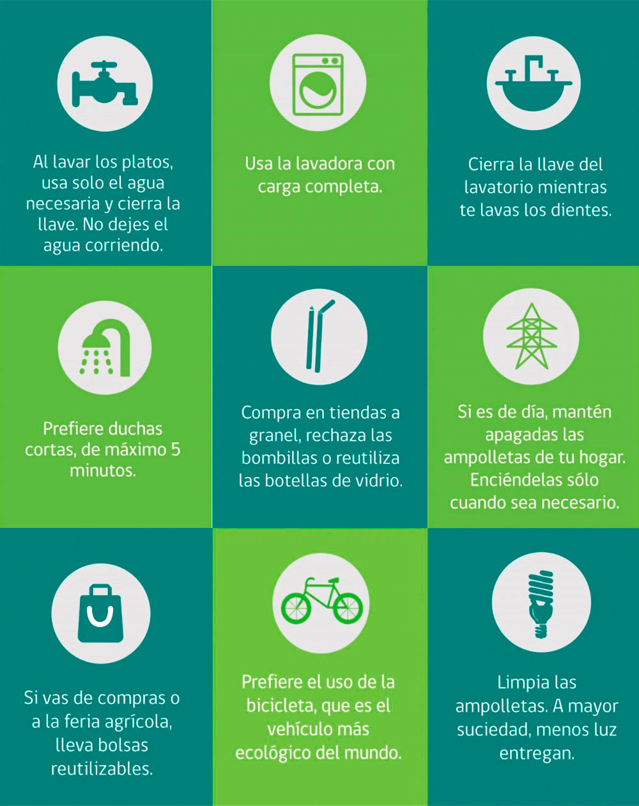

<div class="body">
    <div class="d-flex">
        <div class="parte_izquierda">
            <nav class="mascota">
                <li>
                    
                </li>
            </nav>
            <nav class="consejospconsejos">
                <li>
                    <p>4 tips para cuidar el agua:</p>
                    <p>Cierra bien el agua despues de usarla</p>
                    <p>Procura no darte baños excesivamente largos</p>
                    <p>Evita los baños de tina</p>
    
                </li>
            </nav>
            
        </div>
        <div class="parte_derecha">
            <nav class="sidebar">
                <li>
                    <p>sidebar de consejos</p>
                </li>
            </nav>
        </div>
    </div>
</div>

